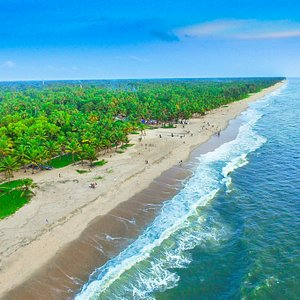
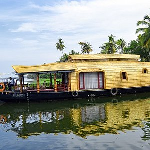

Cherthala
Cherthala, IPA, is a Municipal town and a Taluk located at National highway 66 in the district of Alappuzha, in the state of Kerala, India. Cherthala is the satellite town and industrial hub of Alappuzha

Mararikulam
Mararikulam is a beautiful coastal village located in the Alappuzha district of the Indian state of Kerala. It is situated along the Arabian Sea coast and is known for its picturesque beaches, serene backwaters, and lush greenery. Mararikulam is approximately 40 kilometers away from the city of Kochi..

kuttanad
Kuttanad is a region located in the state of Kerala, India. It is known for its unique geography, which consists of a vast network of backwaters, canals, and rivers.